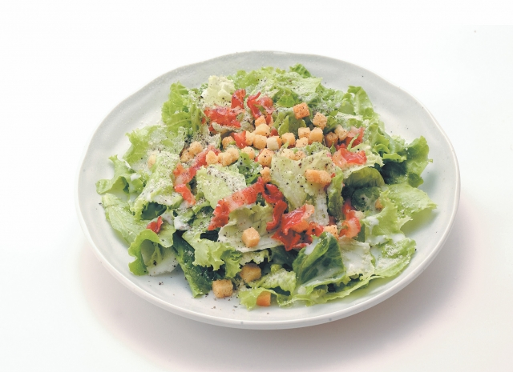
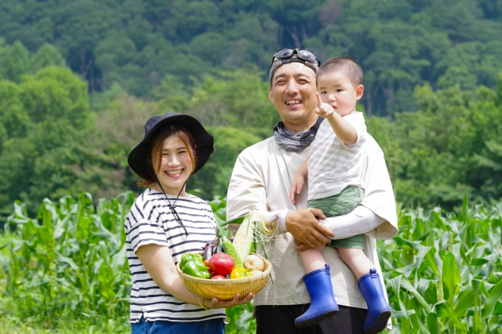
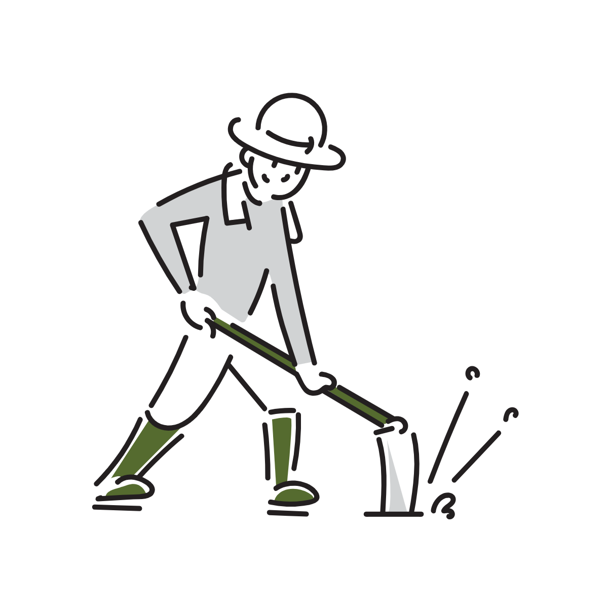
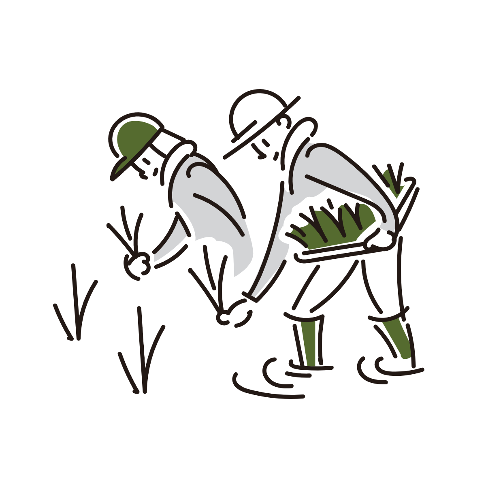
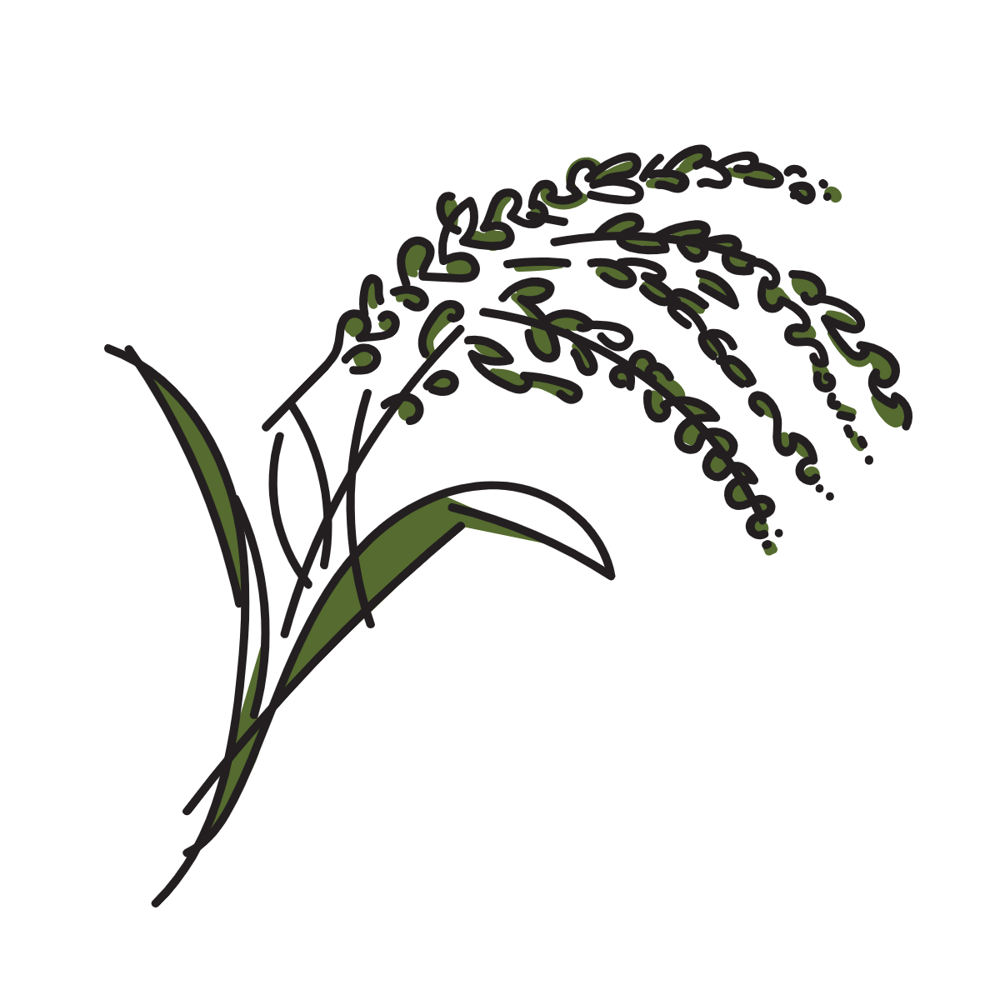
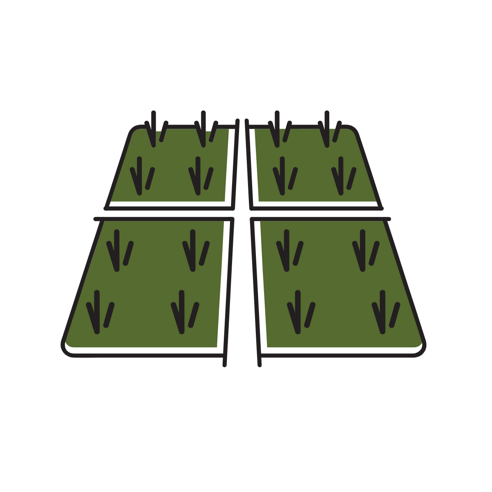
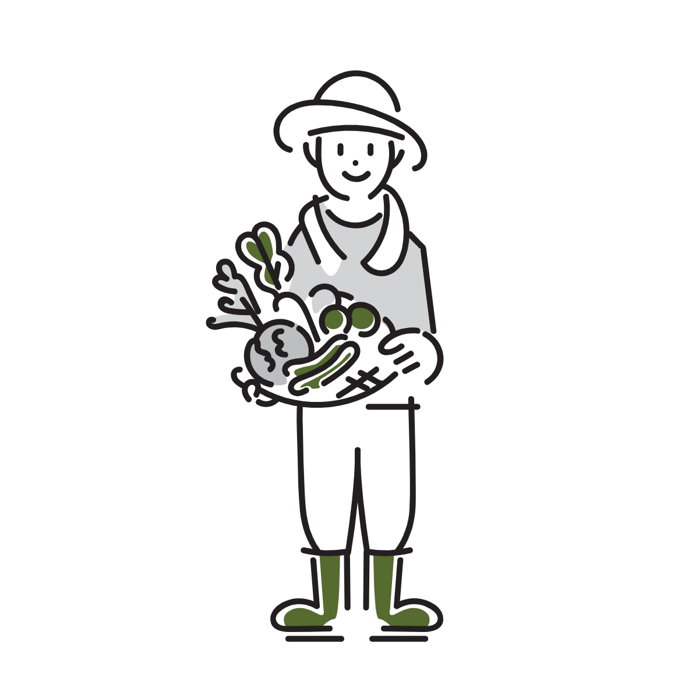
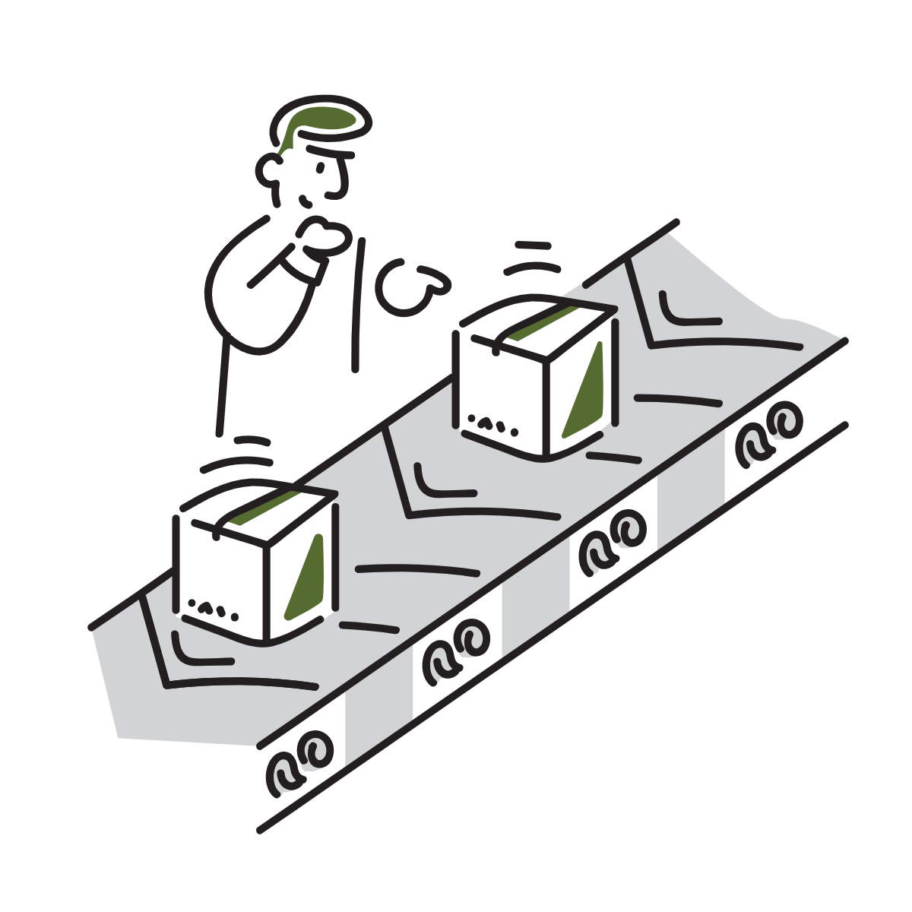

自然の恵みで育った、安心の一皿を食卓に
農薬や化学肥料に頼らず、大地の力だけで育てた野菜をお届けします。小さな子どもにも安心して食べさせられる安全・安心な食材で、家族の健康を支える日々の食卓をもっと豊かに。

自然と触れ合い、健康な未来を育む
体に優しい食べ物を自分たちの手で作ることで、親子で「健康」と「環境」を一緒に考えるきっかけに。楽しく学び、体を動かし、家族の絆を深める特別な体験をぜひご一緒に。
お知らせ
生産過程
-

Step 1: 土壌準備
無農薬栽培に必要な土壌の栄養素を調整し、化学肥料を使わず、自然な方法で土を育てます。
Step 2: 種まき・植え付け
独自開発した種を使用し、太陽光の力と組み合わせ、しっかりと根付かせます。
Step 3: 管理・手入れ
水やりや除草、病害虫対策を無農薬で行い、微生物の協力を得てゆっくりと成長させます。
Step 4: 成長観察・追加管理
植物の成長を観察し、必要に応じて肥料を追加したり、環境を調整します。健やかな成長を支えるため、植物にとって最適な条件を整えます。
Step 5: 収穫
植物が最も美味しく、栄養豊富な状態に育ったときに収穫します。自然の味わいと栄養価をお届けします。
Step 6: 出荷準備
収穫した野菜は丁寧に洗浄・選別し、無駄なくパッキング。新鮮な状態で、あなたの食卓へお届けします。
-
もくもく農園
東京都●●市××町▲▲▲番地